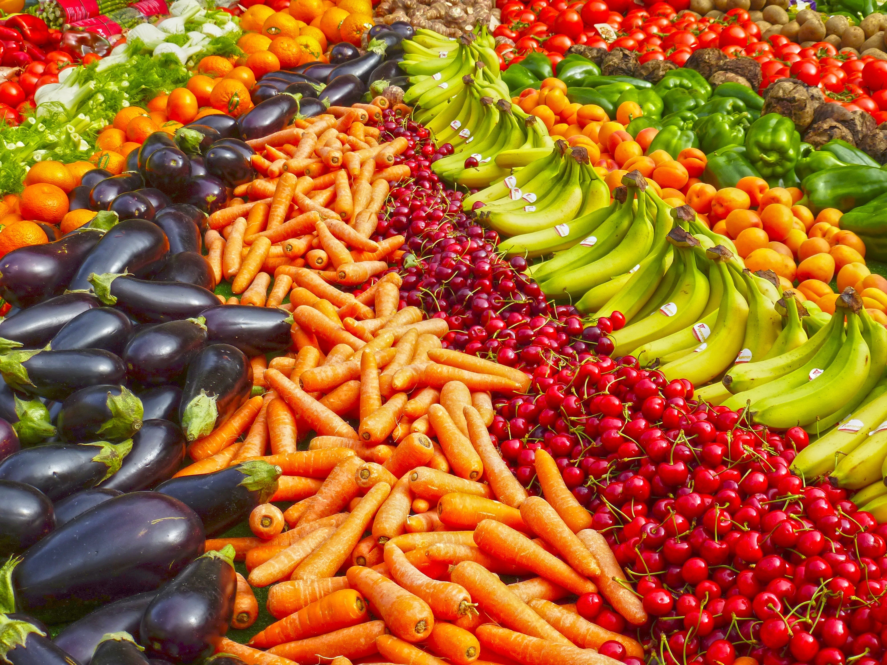

Zdrowe odżywianie oznacza spożywanie różnorodnych produktów, które dostarczają składników odżywczych potrzebnych do zachowania zdrowia, dobrego samopoczucia i energii. Te składniki odżywcze obejmują białko, węglowodany, tłuszcz, wodę, witaminy i minerały. Odżywianie jest ważne dla każdego. W połączeniu z aktywnością fizyczną i utrzymaniem zdrowej wagi,zdrowe odżywianie jest doskonałym sposobem na utrzymanie silnego i zdrowego organizmu.

Według Światowej Organizacji Zdrowia (WHO) zdrowe odżywianie przez całe życie pomaga zapobiegać niedożywieniu we wszystkich jego formach, a także wielu chorobom niezakaźnym (NCD) i różnorodnym dolegliwościom. Jednak, zwiększona produkcja przetworzonej żywności, szybka urbanizacja i zmieniający się styl życia doprowadziły do zmiany wzorców żywieniowych. Obecnie ludzie spożywają więcej produktów wysokoenergetycznych, tłuszczów, wolnych cukrów i soli/sodu, przy niewielkim spożyciu wystarczającej ilości owoców, warzyw oraz błonnika pokarmowego.
Spożywanie co najmniej 400 g lub pięciu porcji owoców i warzyw dziennie zmniejsza ryzyko chorób niezakaźnych i pomaga zapewnić odpowiednie dzienne spożycie błonnika pokarmowego.
- zawsze uwzględniaj warzywa w posiłkach, niezależnie czy jest to śniadanie, obiad, czy kolacja, - stosuj jedzenie świeżych owoców i surowych warzyw jako przekąsek, - sięgaj po sezonowe warzywa i owoce – to będzie gwarancją ich świeżości, - stosuj jedzenie różnorodnych owoców i warzyw.